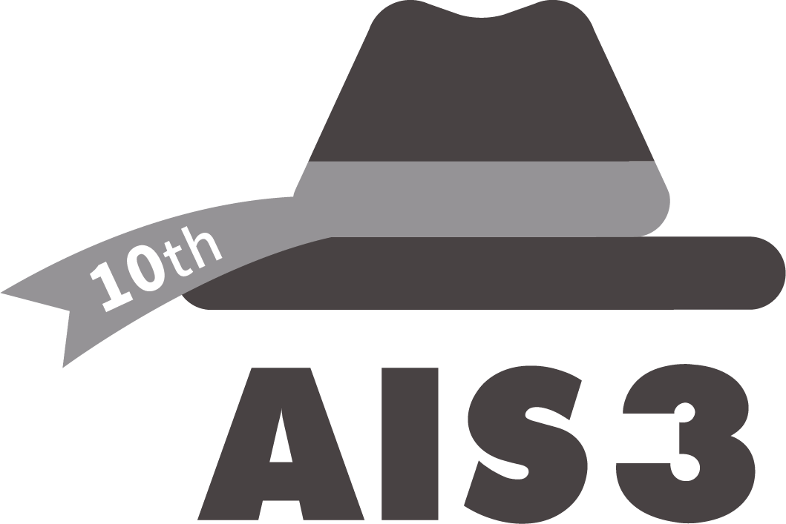

專一2021
初來乍到
第一次離開舒適圈，認識班上同學、加入金融社
- 社員金融社 社員
- 班級認識一群一起熬夜的同學
 1-04
1-04 1-05
1-05 1-03
1-03 1-02
1-02 1-01
1-01CSIE · Freshman Onboarding
我的五專生活
分享者：李庭愷 · 2026.10.15
$ whoami freshman $ git clone first-class Cloning... $ gemini "Hello, CSIE!" ✦ 嗨！準備好開始了嗎？ $
// About Me

// My Journey
專一2021
第一次離開舒適圈，認識班上同學、加入金融社
1-041-051-031-021-01專二2022
從參加者變成辦活動的人
 2-11
2-11 2-12
2-12 2-02
2-02 2-03
2-03 2-04
2-04 2-05
2-05 2-06
2-06 2-07
2-07 2-08
2-08 2-09
2-09 2-10
2-10專三2023
管理一整個處、帶整個資工科
 3-08
3-08 3-09
3-09 3-10
3-10 3-13
3-13 3-12
3-12 3-14
3-14 3-16
3-16 3-17
3-17 3-18
3-18 3-05
3-05 3-07
3-07 3-02
3-02 3-03
3-03 3-22
3-22專四2024
專五2025
 5-01
5-01 5-02
5-02 5-03
5-03 5-04
5-04// My Projects
github.com/LawrenceLee0113// 專案中我學到的


// 專案中我學到的
在學生會玩，沒學到太多新技術，但摸到一點 Linux，第一次把自己做的網站真的架出去


// 專案中我學到的
在科會玩，這年沒有學到新技術

// 專案中我學到的
開始出去寫程式打工，透過 AI 把前端框架技術補齊
專四LINE Bot
官方 LINE 線上點餐系統


專四
即時顯示公車到站資訊
// 專案中我學到的

專五AI Agent
多智能體協作互聯平台
// 專案中我學到的
畢業後沒事做，等當兵，等被 AI 淘汰

現在原生 APP
健康測量前端模塊
// Quiz · 有獎徵答
01
// Part 01
寫程式的存檔點與後悔藥
// Git 101 · 01
你一定做過這種事
Git：只留一個檔案，
每一次修改都幫你記下來。
// Git 101 · 02
Git
$ git commit
GitHub
github.com/你的帳號
就像打遊戲：Git 是存檔功能，GitHub 是雲端存檔，換台主機也能接著玩
// Git 101 · 03
一個被 Git 管理的專案資料夾
一個存檔欄位
幫目前的檔案拍一張快照，附上一句說明
存檔點，隨時可以讀檔回去
開一條平行世界試新功能，成功再 merge 回 main
開支線劇情，不怕玩壞主線
push 把本機 commit 傳上 GitHub；pull 把別人的更新抓下來
上傳 / 下載雲端存檔
// Git 101 · 04
Working Directory
你正在改的檔案
git add→Staging Area
挑出這次要存的檔案
git commit→Local Repo
存檔點都在這裡
git push→Remote
雲端備份，大家都看得到
// Git 101 · 05
Lv.1

最慢，但你最清楚每一步在做什麼
從這裡開始Lv.2

內建 Source Control 面板，點按鈕就能 commit / push，Graph 看歷史很直覺
Lv.3

用講的就好，Gemini CLI、Claude Code 這類工具幫你下 git 指令
Lv.4
$ gh auth login
✓ Logged in to github.com as LawrenceLee0113
$ claude
❯ 幫我把 dev 開一個 PR 合併到 main，順便關掉 #8 issue
⏺ Bash(gh pr create --base main --head dev --fill)
⎿ https://github.com/you/my-website/pull/12
⏺ Bash(gh issue close 8)
⎿ ✓ Closed issue #8
AI 能幫你開 Repo、發 PR、回 Issue，連 GitHub 都一起操作
權限很大先懂概念，再交給 AI。非常建議從指令開始：學會 add → commit → push 的基本流程，AI 幫你操作時你才看得懂它在做什麼、出錯時救得回來。
// Git 101 · 06
專題不用再互傳 final_v3.zip，大家改同一個 Repo，誰改了什麼一清二楚。
GitHub Pages 讓你的網頁有一個真的網址，丟給朋友就能看。
等一下就做用學校信箱申請 GitHub Education，Copilot 等開發工具免費用。
履歷放一個 GitHub 連結，面試官會點進去看你寫過什麼。綠色格子越多越有說服力。
真實案例
GitHub 是公開的：放上去的東西，就是你的作品集
02
// Part 02
用 GitHub Pages 把網頁放上網路
// Hands-on · GitHub Pages
用 Gemini 寫網頁，用 GitHub Pages 架上網
STEP 01/ 12
打開 github.com 登入，進到 Dashboard。

STEP 02/ 12
點右上角的頭像 → Repositories。

STEP 03/ 12
點右上角綠色的 New 按鈕。

STEP 04/ 12
Repository name 填 my_website，Visibility 選 Public，按 Create repository。
免費版 GitHub Pages 只能用 Public 的 Repo

STEP 05/ 12
在 Quick setup 區塊點 creating a new file。

STEP 06/ 12
打開 Gemini，直接用中文跟它說你要什麼，再把它產生的 HTML 程式碼複製起來。
幫我用 html 格式介紹特斯拉最新款差別

STEP 07/ 12
檔名打 index.html，把 Gemini 給的程式碼整段貼進編輯區。
首頁檔名一定要叫 index.html

STEP 08/ 12
按右上角 Commit changes…，訊息填 Create index.html，再按 Commit changes。
Commit ＝ 幫這次修改存一個版本

STEP 09/ 12
Settings → 左側 Pages，Branch 選 main、資料夾 / (root)，按 Save。

STEP 10/ 12
出現 being built from the main branch 代表正在部署，等 1～2 分鐘後重新整理。

STEP 11/ 12
出現 Your site is live at，網址格式是 https://帳號.github.io/repo名稱/。

STEP 12/ 12
打開網址，你的網頁已經在網路上，傳給任何人都看得到。


// Hands-on · Git
先把這兩個工具裝好

git-scm.com/downloads
git --version，跳出視窗就按「安裝」code.visualstudio.com
裝好後打開終端機輸入 git --version，看到版本號就成功了
03
// Part 03
駭客怎麼想，我們怎麼防
// Security 101 · 01
用學校的「成績系統」來想
C
你的成績只有你和老師看得到
被破壞：同學偷看到全班成績
I
成績不會被偷偷改掉
被破壞：有人把 59 分改成 60 分
A
要查成績的時候系統打得開
被破壞：選課當天網站被灌爆掛掉
// Security 101 · 02
CTF 資安競賽也是照這幾類出題
請求、登入與資料權限
封包、連線與信任
從程式推回它的行為
輸入如何跨越記憶體邊界
加密、雜湊與驗證的保證
從證據重建發生過什麼
// Security 101 · 03
YouTube 影片可以設成公開、不公開、私人。
就算知道網址，伺服器每一次都要檢查「你有沒有權限看」。
不應該完全信任任何人
真實案例 · 2020
每一個能拿到資料的入口，都要檢查權限
// Security 101 · 04
DNS 像電話簿：網址 → IP。被竄改就會被帶去假網站。
TLS：網址列的 ，憑證有效、內容有加密。
看到憑證警告，不要硬按「繼續前往」
真實案例 · 2018
myetherwallet.com 導到自己架的假網站憑證警告就是在說「對方可能不是本人」
// Security 101 · 07
加密 Encryption有金鑰就能解密回來 → 防偷看
例子｜傳 LINE 訊息你打「明天考試範圍？」，傳出去是一串亂碼，只有同學的手機能用金鑰解開。中間被攔截，也看不懂。
雜湊 Hashing固定長度、無法還原 → 拿來比對
例子｜網站存密碼註冊時，資料庫只存密碼 1234 的雜湊 03ac6742…。登入時把你輸入的再雜湊一次，一樣就放行。資料庫外洩，駭客也拿不到原本的密碼。
真實案例 · 2012
123456存密碼要用 bcrypt 這類慢雜湊 + 加鹽；自己也別用 123456
04
// Part 04
接下來該學什麼、用什麼工具
// Learning Path · 01
// Learning Path · 02
// Learning Path · 03
// Learning Path · 04
但基礎還是要打好
才能說你讀過「資工」
// Learning Path · 05
一個人學很慢，去找跟你一樣在玩的人
學生辦給學生，台上常是高中職生
黑客松歡迎新手，不寫程式也能參與
每年夏天，免費、不用報名直接逛

想走資安，這是入門的正規路線
比賽、黑客松都在這找 → bhuntr.com
Q&A
// Ask Me Anything
社團幹部、學生會、
科會長的經驗
兩年多的接案經驗，
分享業界的知識與細節
任何問題都可以問我，
我都很樂於解答